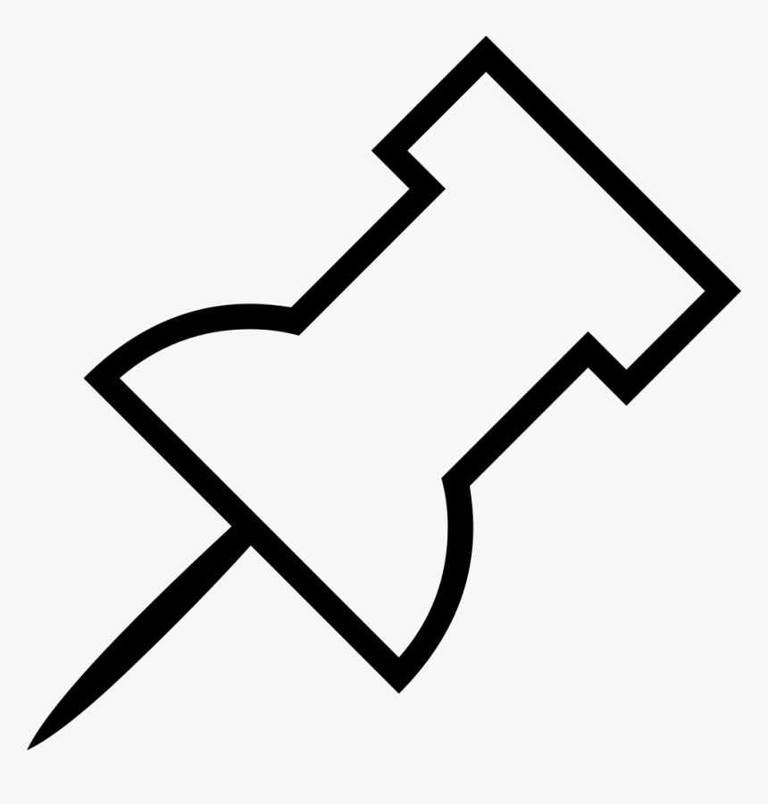

<div class="container"  >

<!-- <div style="flex-wrap: wrap;">
    <div class="others"  *ngIf="!trash && !archieve">Pinnotes</div>
    <div class="getAllNotes"  fxLayout="{{view}}" fxFlexOffset="15" *ngFor="let note of pinnotes">
        <mat-label style="font-family: fantasy;color: darkgray; position: absolute;">Pinnotes</mat-label>
        <mat-card class="getNotesMat" >
            <div class="matdiv">
                <div class="pinNotes">
                    <button *ngIf="!isPinned" mat-icon-button matTooltip="pin" class="button">
                        
                     </button>
                </div>
                <mat-card-title >  {{note.title}}</mat-card-title><br>
                    <mat-card-content > {{note.description}} </mat-card-content>
            </div>
            <app-icons [note]='note' ></app-icons>
        </mat-card>
    </div>
</div> -->


<div style="flex-wrap: wrap;">
    <div class="others" *ngIf="!trash || !archieve">others</div>
    <div class="getAllNotes" fxLayout="{{view}}" fxFlexOffset="15"  *ngFor="let note of notes" >   
        <mat-card class="getNotesMat">
            <div class="matdiv">
                <div class="pinNotes">
                    <app-pinnotes [note]="note" ></app-pinnotes>
                </div>
            <mat-card-title>{{note.title}}</mat-card-title> <br>
            <mat-card-content > {{note.description}} </mat-card-content> 
            </div>
        </mat-card>
    </div>
</div>
</div>

